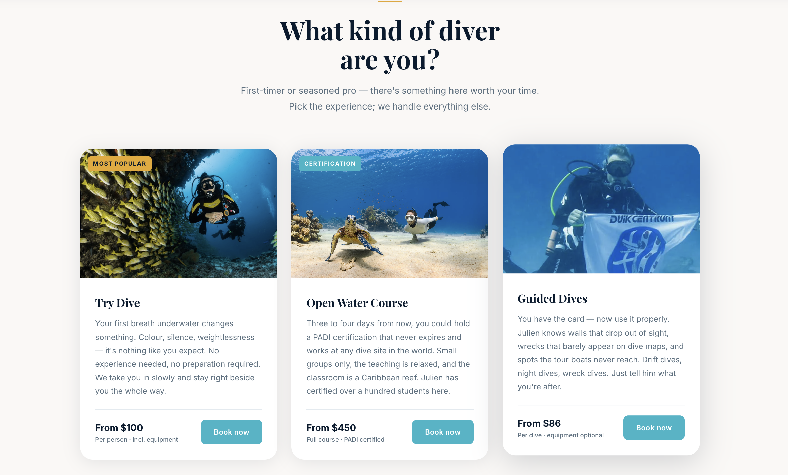

Operating since 2011. Zero Google presence. Every new guest came through word of mouth alone.
A school that had been running certified PADI courses for over a decade — local instructors, their own house reef, an operation that guests consistently praised. But when tourists landed on the island and searched online for dive courses, this school didn't appear.
The few people who found the site encountered an outdated page with no structure, no clear course overview, and no reason to trust. First-timers — parents booking beginner courses, solo travellers considering their first open-water dip — need to feel confident before they pick up the phone. The site wasn't providing that.
The brief was clear: build something structured and credible. Not flashy — clear. Visitors needed to immediately understand what courses were available, who the instructors were, and what the process looked like from first contact to certification.
We designed the site mobile-first, with clean hierarchy and fast load times. Course pages are short and direct. Instructor profiles use real names and real photos. The tone is calm and capable — exactly what someone considering their first dive wants to feel reading a website.
Copy was written in English with key sections adapted into Papiamentu for local guests — a small detail that communicated something important: this school belongs to this island.
Within three weeks of launch, the school received its first direct enquiry from a tourist who had found the site through Google search. For an operation that had run entirely on referrals for over a decade, that was a meaningful shift.
The new site gave the school something they didn't have before: a professional first impression that could stand up to comparison. Word of mouth still matters — but now it has somewhere worth sending people.